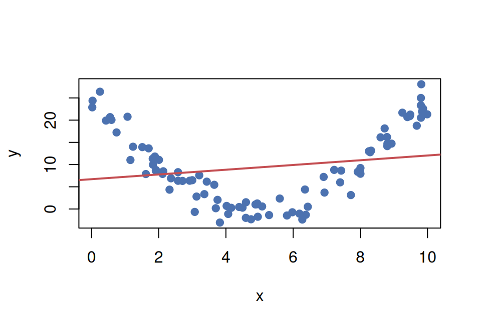
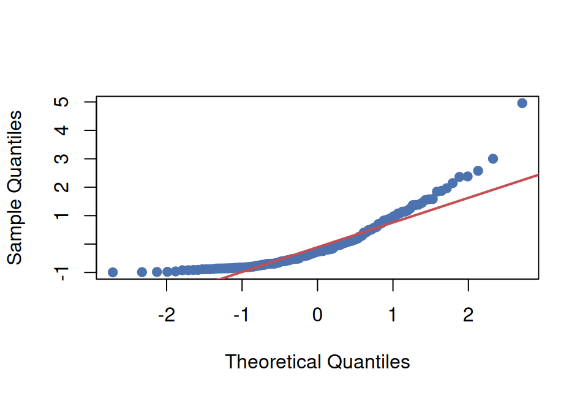
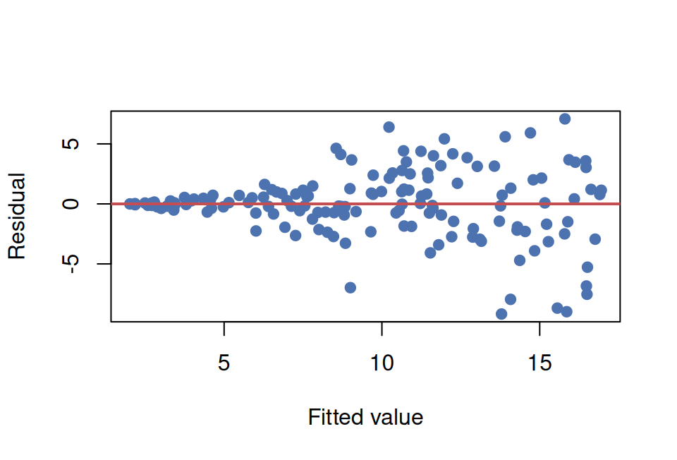

Module 5, Quiz A (Def & Notation)
Question bank · After Read 1 · open notes · unlimited attempts
Module 5, Quiz A: Definitions & notation
Reading: Module 5 Read 1
Project: Project 5 · Canvas: Def & Notation quiz (Module 5)
Work these practice items after Read 1. Sections follow Read 1: scatterplot vocabulary, regression line notation (slope, intercept, prediction), residuals / MSE / R², residual conditions for inference, the confidence interval for the slope, and the contrast between a confidence interval for the mean response and a prediction interval.
Full regression workflow, R output, and lab situations → Synthesis.
Section A, Scatterplot vocabulary (Read 1, Build)
A1. Form
Define form in the context of describing a scatterplot.
A2. Direction
Define direction in the context of a scatterplot.
A3. Strength
Define strength in the context of a scatterplot.
A4. Pearson correlation
Define Pearson correlation \(r\) and state its range.
A5. Positive vs negative correlation
What does the sign of \(r\) tell you? What does \(|r|\) close to 1 vs close to 0 tell you?
Click to reveal answers, Section A, Scatterplot vocabulary (Read 1, Build)
Form describes the overall shape of the pattern, whether the relationship looks roughly linear, curved, or neither (no pattern).
Direction is positive (both variables tend to increase together), negative (one increases as the other decreases), or none (no consistent direction).
Strength describes how closely the points cluster around a trend, strong (tight cluster), moderate, weak, or none.
Pearson \(r\) is a unitless measure of the strength and direction of a linear association between two numerical variables; it ranges from \(-1\) to \(1\).
\(r > 0\): positive direction (as \(x\) increases, \(y\) tends to increase). \(r < 0\): negative. \(|r|\) near 1: strong linear association. \(|r|\) near 0: weak to no linear association.
Section B, Regression line notation (Read 1, Build)
B1. Fitted line notation
Write the simple linear regression prediction equation and identify each symbol.
B2. Slope interpretation
State the general interpretation template for a slope \(b_1\) in context.
B3. Intercept interpretation
State the general interpretation template for the intercept \(b_0\).
B4. Point prediction
Exam-score model: \(\hat{y} = 47.7 + 3.06x\) (study hours). Predict the score for a student studying 8 hours.
B5. Fitting with lm()
Write the R call to fit a simple linear regression of height_cm on dose using a data frame plant_dat.
Click to reveal answers, Section B, Regression line notation (Read 1, Build)
\(\hat{y} = b_0 + b_1 x\). \(\hat{y}\): predicted (fitted) value of the response. \(b_0\): intercept (predicted \(y\) when \(x=0\)). \(b_1\): slope (predicted change in \(y\) per one-unit increase in \(x\)). \(x\): value of the explanatory variable.
For each additional one-unit increase in \(x\), the predicted value of \(y\) changes by \(b_1\) units (increases if \(b_1>0\), decreases if \(b_1<0\)).
The intercept \(b_0\) is the predicted value of \(y\) when \(x = 0\). Caution: this is only meaningful if \(x = 0\) is a plausible value in context.
\(\hat{y} = 47.7 + 3.06(8) = 47.7 + 24.48 = 72.18\) points.
lm(height_cm ~ dose, data = plant_dat)(or assign to an object:fit <- lm(height_cm ~ dose, data = plant_dat)).
Section C, Residuals, MSE, and R² (Read 1, Build and Assess)
C1. Residual definition
Define a residual for an observation \((x_i, y_i)\) with fitted value \(\hat{y}_i\).
C2. Least-squares criterion
What does the least-squares method minimize to choose the best regression line?
C3. Test MSE
Define test MSE and explain why it is preferred over training MSE for evaluating a model.
C4. R² interpretation
Interpret \(R^2 = 0.68\) on the test set for a study-hours to exam-score model.
C5. Cross-validation
What problem does k-fold cross-validation solve, and what does it estimate?
Click to reveal answers, Section C, Residuals, MSE, and R² (Read 1, Build and Assess)
Residual \(= y_i - \hat{y}_i\), the difference between the observed response and the model’s predicted response.
Least-squares minimizes the sum of squared residuals \(\sum (y_i - \hat{y}_i)^2\), no other line produces a smaller total.
Test MSE \(= \frac{1}{n_{\text{test}}}\sum(y_i - \hat{y}_i)^2\) on held-out data. It is preferred because training MSE is optimistically biased, the model was fit on those same points, so training MSE understates error on new data.
The linear model explains about 68% of the variability in exam scores in the test set. The remaining 32% is unexplained by study hours alone.
With a small dataset a single train/test split is noisy and wastes data. K-fold cross-validation rotates every observation through the test role exactly once and averages the held-out errors, giving a more stable estimate of out-of-sample prediction error.
Section D, Residual conditions for inference (Read 1, Assess)
D1. Normality condition
What assumption about residuals supports confidence and prediction intervals in regression?
D2. Checking residuals
Name two visual checks used to assess residual normality in regression.
D3. When inference is unreliable
If a residual plot shows a clear funnel shape (spread increases with \(x\)), what concern does this raise?
Click to reveal answers, Section D, Residual conditions for inference (Read 1, Assess)
Residuals should be approximately normally distributed with constant spread (homoscedasticity) across all values of \(x\), and the observations should be independent with a linear form.
A histogram of residuals (should look roughly bell-shaped) and a Q-Q plot (points should fall near the diagonal line).
Non-constant variance (heteroscedasticity), the equal-spread condition is violated, so standard CIs and p-values may be unreliable.
Section E, Match the R output to the interpretation (Read 1, Use)
Each item shows a fitted model, one R call, and its output. Every interpretation listed is correctly worded, but only one matches the R call shown. Pick the matching letter. The trick is to recognize which quantity the call describes: the slope, the mean response at a chosen \(x_0\), or an individual at \(x_0\).
E1. confint() on the predictor
A model predicts exam score (points) from weekly study hours.
fit <- lm(exam_score ~ study_hours, data = exam_dat)
confint(fit, "study_hours", level = 0.95)
#> 2.5 % 97.5 %
#> study_hours 2.44 3.68Which interpretation matches this output?
- Each additional hour of weekly study is associated with a change in the mean exam score of between 2.44 and 3.68 points (95% confidence).
- The mean exam score for all students who study 10 hours is between 2.44 and 3.68 points (95% confidence).
- One new student who studies 10 hours will score between 2.44 and 3.68 points (95% confidence).
- The mean exam score for students who study 0 hours is between 2.44 and 3.68 points (95% confidence).
E2. predict() with interval = “confidence”
Same model as E1.
predict(fit, newdata = data.frame(study_hours = 10),
interval = "confidence", level = 0.95)
#> fit lwr upr
#> 1 78.3 76.1 80.5Which interpretation matches this output?
- Each additional hour of study changes the mean exam score by between 76.1 and 80.5 points (95% confidence).
- The mean exam score for all students who study 10 hours is between 76.1 and 80.5 points (95% confidence).
- One new student who studies 10 hours will score between 76.1 and 80.5 points (95% confidence).
- The mean exam score for students who study 0 hours is between 76.1 and 80.5 points (95% confidence).
E3. predict() with interval = “prediction”
Same model as E1.
predict(fit, newdata = data.frame(study_hours = 10),
interval = "prediction", level = 0.95)
#> fit lwr upr
#> 1 78.3 62.3 94.3Which interpretation matches this output?
- One new student who studies 10 hours will score between 62.3 and 94.3 points (95% confidence).
- The mean exam score for all students who study 10 hours is between 62.3 and 94.3 points (95% confidence).
- Each additional hour of study changes the mean exam score by between 62.3 and 94.3 points (95% confidence).
- The mean exam score for students who study 0 hours is between 62.3 and 94.3 points (95% confidence).
Click to reveal answers, Section E, Match the R output to the interpretation (Read 1, Use)
confint()on the predictor row is the confidence interval for the slope, a per-one-hour change in the mean response. Option b is the mean-response CI, c is the prediction interval, and d is the intercept CI; each is worded correctly but comes from a different R call.
interval = "confidence"gives the confidence interval for the mean response at the chosen \(x_0 = 10\), the average score among all students who study 10 hours.
interval = "prediction"gives the interval for one individual new student at \(x_0 = 10\), which is why it is wider than the mean-response interval in E2.
Section F, Choosing and using intervals (Read 1, Use)
F1. Why PI is wider
Explain in one sentence why the prediction interval is wider than the confidence interval for the mean response at the same \(x_0\).
F2. Which interval to use
A student wants to know what score they personally can expect to earn. Should they use the confidence interval for the mean or the prediction interval? Why?
F3. R syntax for prediction interval
Write the R call to compute a 95% prediction interval for a new observation at dose = 7 using a fitted model fit_plant.
Click to reveal answers, Section F, Choosing and using intervals (Read 1, Use)
The prediction interval must account for both the uncertainty in the mean (same as the CI) plus the individual’s random deviation from that mean, two sources of uncertainty instead of one.
The prediction interval, because it covers where one individual future observation is likely to fall, not just where the average falls.
predict(fit_plant, newdata = data.frame(dose = 7), interval = "prediction", level = 0.95)
Section G, Testing the slope and the correlation (Read 1, Use)
G1. Slope p-value
In summary(lm(exam_score ~ study_hours)), the study_hours row shows a p-value of 0.001 for the slope. State the null hypothesis being tested and the conclusion at the 0.05 level.
G2. Same p-value
In simple linear regression, how does the p-value from the slope t-test in summary(lm()) compare to the p-value from cor.test() on the same two variables? Explain why.
G3. p-value vs slope size
A model has a tiny slope estimate but a very small p-value. Does a small p-value mean the relationship is large or important? Explain.
Click to reveal answers, Section G, Testing the slope and the correlation (Read 1, Use)
The null hypothesis is \(H_0: \beta_1 = 0\) (no linear relationship between study hours and exam score). Since 0.001 is below 0.05, we reject \(H_0\) and conclude there is a statistically significant linear relationship.
They are identical. Testing \(\beta_1 = 0\) is algebraically the same as testing \(\rho = 0\), because the slope and correlation are linked by \(b_1 = r \, (s_y / s_x)\). The two tests always give the same p-value in simple linear regression.
No. A small p-value only says the slope is distinguishable from 0, not that it is large. With a big sample even a trivially small slope can be statistically significant. Judge importance from the size of the slope and the prediction quality, not the p-value alone.
Section H, Interpreting fit on real data (Read 1, Assess)
H1. Penguins R²
A model predicts penguin body mass (g) from flipper length (mm). On held-out test penguins, \(R^2 = 0.76\). Interpret this number in context.
H2. Penguins RMSE
The same penguin model has a test RMSE of about 390 g. Interpret this number in context, and state why RMSE is often reported instead of MSE.
H3. Diamonds slope and intercept
A model predicts diamond price ($) from carat. The fitted line is \(\hat{y} = -2256 + 7756\,x\). Interpret the slope, and explain why the intercept is not a meaningful prediction here.
Click to reveal answers, Section H, Interpreting fit on real data (Read 1, Assess)
Flipper length explains about 76% of the variation in body mass among new penguins the model was not fit on. The other 24% is due to other factors and individual variation.
A typical prediction for a new penguin misses its actual body mass by about 390 g. RMSE is reported because it is the square root of MSE, so it is back in the original units (grams) and easier to read than MSE in grams-squared.
Slope: each additional carat is associated with a predicted increase of about $7,756 in price. Intercept: it is the predicted price of a 0-carat diamond, which comes out negative and impossible, so it only anchors the height of the line and is not a real prediction.
Section I, Reading conditions from plots (Read 1, Assess)
Each plot below comes from a fitted simple linear regression. Decide which condition, if any, is in trouble.
I1. Scatterplot shape
The straight line is the least-squares fit. Which regression condition does this scatterplot violate, and is a slope p-value trustworthy here?
I2. Q-Q plot of residuals

The residuals curve away from the diagonal line at both ends. Which condition does this call into question?
I3. Residuals versus fitted values

The spread of the residuals grows as the fitted value grows (a funnel shape). Which condition is violated, and what does it mean for the p-value and intervals?
Click to reveal answers, Section I, Reading conditions from plots (Read 1, Assess)
The linear-form condition is violated: the true pattern is curved, not straight. A slope p-value for a line fitted to a curve is not trustworthy. Fix the form (for example, transform a variable) before doing inference.
The approximate-normality condition for the residuals. The strong curvature away from the diagonal signals skewed, non-normal residuals, so confidence and prediction intervals may be unreliable.
The constant-spread (equal-variance) condition is violated; this is heteroscedasticity. The standard errors are off, so the p-value and the confidence and prediction intervals are unreliable.
Reuse
Creative Commons Attribution-NonCommercial 4.0 International(View License)